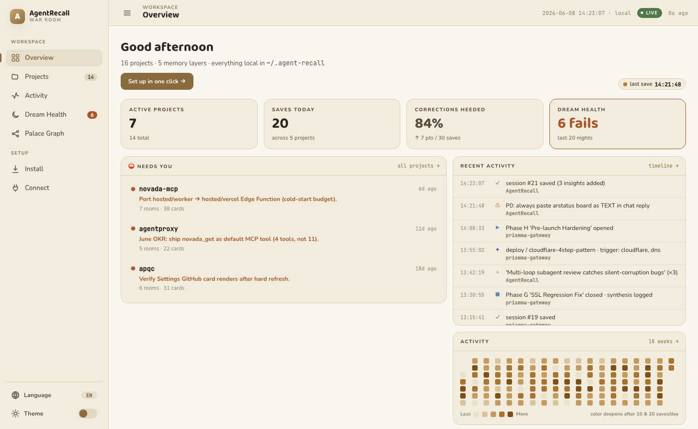

Open source
AgentRecall
AI agents forget everything between sessions. AgentRecall is a local-first memory system that carries corrections and context forward, usable through MCP, an SDK and a CLI. I own product direction, implementation, evaluation and releases.